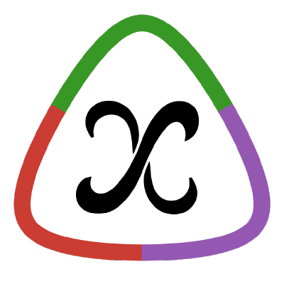

7 Cálculo simbólico
7.1 Symbolics.jl
Symbolics.jl es un paquete que implementa un avanzado Sistema de Álgebra Computacional (CAS) basado en un lenguaje de modelado simbólico.
Las variables y las expresiones simbólicas pueden utilizarse con la mayoría de las funciones de Julia para cálculo numérico, por lo que se integran a la perfección en el ecosistema de Julia.

7.1.1 Variables y expresiones simbólicas
Para declarar variables simbólicas se utiliza la siguiente macro:
@variables x y ...: Declara las variablesx,y, etc. como variables simbólicas.
El tipo de las variables simbólicas es Num.
Cualquier expresión en la que interviene una variable simbólica se convierte automáticamente en una expresión simbólica.
7.1.2 Ejemplo de variables y expresiones simbólicas
using Symbolics
julia> @variables x y
2-element Vector{Num}:
x
y
julia> z = x^2 - y
x^2 - y
julia> typeof(z)
Num
julia> A = [x + y 2x; -y y - x] # Matriz simbólica
2×2 Matrix{Num}:
x + y 2x
-y y - x7.1.3 Álgebra simbólica
Se pueden realizar operaciones algebraicas con expresiones simbólicas utilizando los mismos operadores del Álgebra numérica.
using Symbolics
julia> @variables x y;
julia> (x + 1) + (x + 2)
3 + 2x
julia> A = [x + y 2x; -y y - x] # Matriz simbólica
2×2 Matrix{Num}:
x + y 2x
-y y - x
julia> B = [x, y] # Vector simbólico
2-element Vector{Num}:
x
y
julia> A * B # Producto matricial
2-element Vector{Num}:
x*(x + y) + 2x*y
y*(y - x) - x*y7.1.4 Simplificación de expresiones
Para simplificar expresiones simbólicas se utiliza la siguiente función:
simplify(e): Devuelve la expresión simbólica que resulta de simplificar la expresión simbólicae.
La simplificación utiliza el paquete SymbolicUtils.jl que implementa un potente sistema de reescritura de términos.
using Symbolics
@variables x y;
julia> simplify(2(x+y))
2x + 2y
julia> simplify(2(x+y))
2x + 2y
julia> simplify(sin(x)^2 + cos(x)^2)
17.1.5 Sustitución de variables en expresiones
Para sustituir una variable simbólica en una expresión se utiliza la siguiente función:
substitute(e, d): Realiza la sustitución de las claves por los valores del diccionarioden la expresión simbólicae.
using Symbolics
@variables x y;
julia> substitute(cos(2x), Dict([x => π]))
1.0
julia> substitute(x * y + 2x -y + 2, Dict([x => 1, y => 2]))
47.1.6 Resolución de ecuaciones
Para definir una ecuación se utiliza el símbolo ~ en lugar de la igualdad.
Para resolver una ecuación se utiliza la siguiente función:
Symbolics.solve_for(eq, var): Devuelve un vector con los valores de las variables del vectorvarque cumplen la ecuación o sistema de ecuacioneseq, siempre que la ecuación tenga solución.
Actualmente solo funciona para ecuaciones lineales.
using Symbolics
@variables x y;
julia> Symbolics.solve_for(x + y ~ 0, x)
-y
julia> Symbolics.solve_for([x + y ~ 4, x - y ~ 2], [x, y])
2-element Vector{Float64}:
3.0
1.07.1.7 Cálculo de derivadas
Para calcular la derivada de una función se utiliza la siguiente función:
Symbolics.derivative(f, x): Devuelve la expresión simbólica de la derivada de la funciónfcon respecto a la variable simbólicax.
using Symbolics
julia> @variables x y;
julia> Symbolics.derivative(exp(x*y), x)
y*exp(x*y)
julia> Symbolics.derivative(Symbolics.derivative(exp(x*y), x), y)
x*y*exp(x*y) + exp(x*y)7.1.8 Cálculo de derivadas con operadores diferenciales
Para construir un operador diferencial (\(\frac{d}{dx}\)) se utiliza la siguiente función:
Differential(x): Crea el operador diferencial con respecto a la variable simbólicax.
Para obtener la función derivada, una vez aplicado el operador diferencial a una función, es necesario aplicar la siguiente función:
expand_derivatives(D(f)): Devuelve la expresión simbólica que corresponde a la derivada de la funciónfcon respecto a la variable del operador diferencialD.
7.1.9 Ejemplo de cálculo de derivadas con operadores diferenciales
using Symbolics
@variables x y;
julia> Dx = Differential(x)
(::Differential) (generic function with 2 methods)
julia> f(x) = sin(x^2)
f (generic function with 1 method)
julia> f1(x) = Dx(f(x))
f1 (generic function with 1 method)
julia> expand_derivatives(f1(x))
2x*cos(x^2)
julia> Dy = Differential(y)
(::Differential) (generic function with 2 methods)
julia> expand_derivatives(Dx(Dy(cos(x*y))))
-sin(x*y) - x*y*cos(x*y)7.1.10 Gradiente y matriz Hessiana de una función de varias variables
Para calcular el vector gradiente de una función de varias variables se utiliza la siguiente función:
Symbolics.gradient(f, vars): Devuelve el vector gradiente de la funciónfcon respecto a las variables del vectorvars.
Y para calcular la matriz Hessiana se utiliza la siguiente función:
Symbolics.hessian(f, vars): Devuelve la matriz Hessiana de la funciónfcon respecto a las variables del vectorvars.
7.1.11 Ejemplo de gradiente y matriz Hessiana de una función de varias variables
using Symbolics
@variables x y;
julia> Symbolics.gradient(exp(x*y), [x, y])
2-element Vector{Num}:
y*exp(x*y)
x*exp(x*y)
julia> Symbolics.hessian(exp(x*y), [x, y])
2×2 Matrix{Num}:
(y^2)*exp(x*y) x*y*exp(x*y) + exp(x*y)
x*y*exp(x*y) + exp(x*y) (x^2)*exp(x*y)